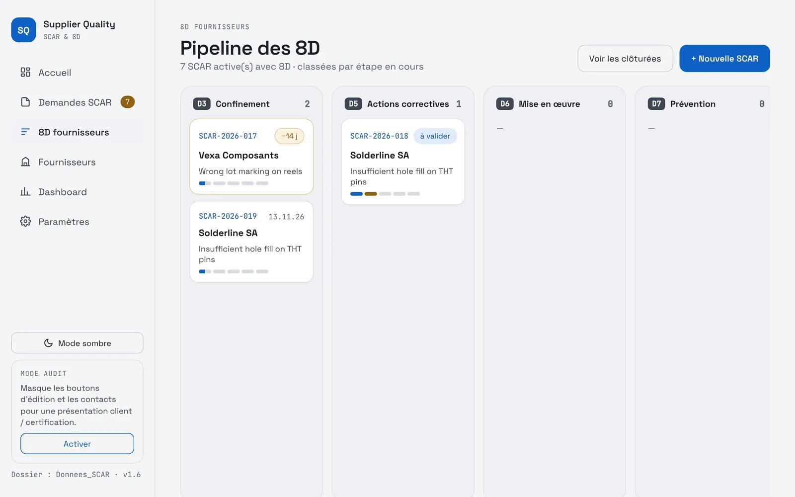
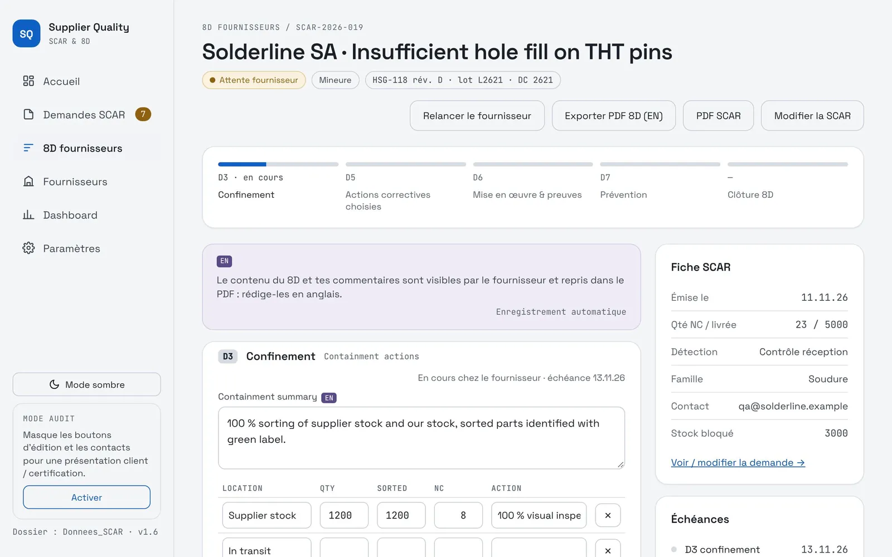
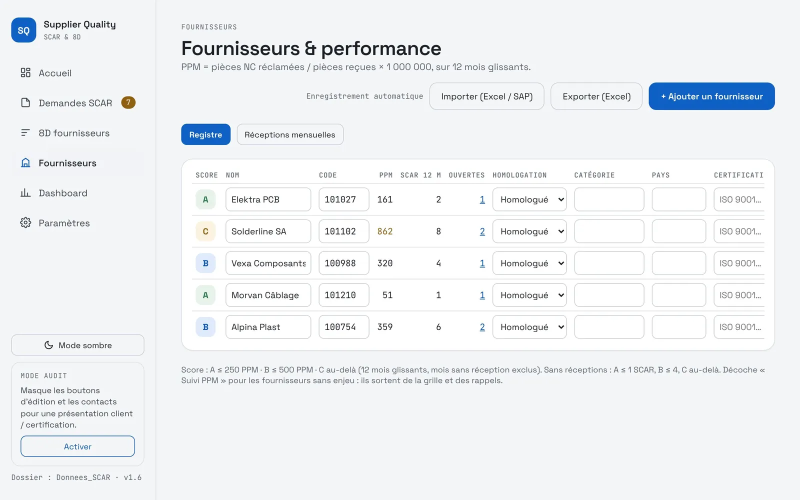
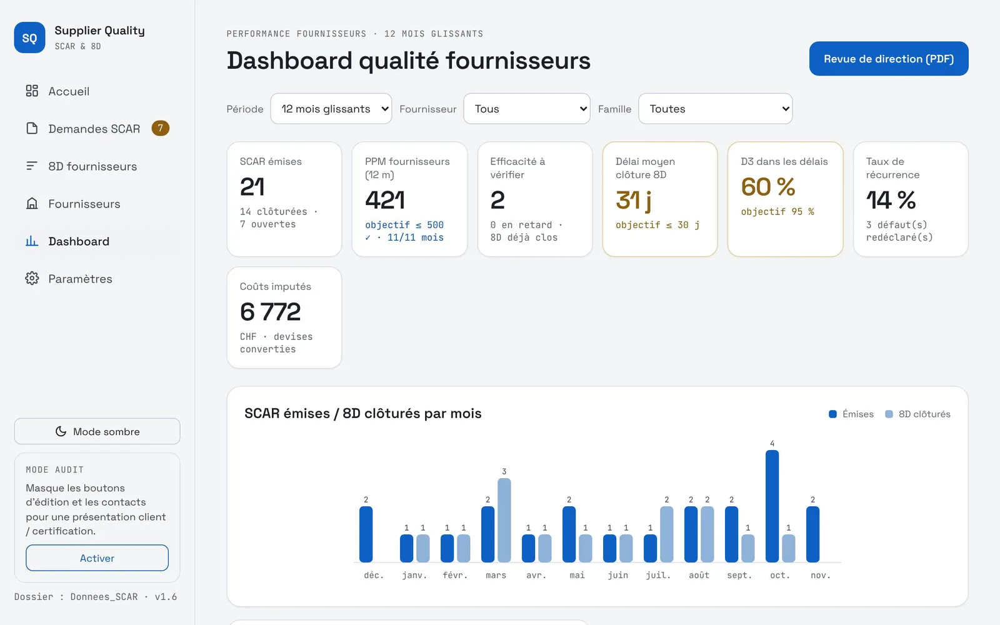

← Back to applications
Suppliers · SCAR and 8D
From supplier defect to closed 8D, with no re-entry
A supplier complaint is created in three minutes, sent with its PDF and followed step by step until the 8D is closed. Supplier indicators compute themselves.
The problem
Before: every complaint cost data-entry time
Before
- 10 min to write a SCAR
- 2 min to send it to the supplier
- 10 min to close each 8D step
- Reminders to send by hand
- Over an hour to compute the indicators
Over 1 hjust for the supplier indicators
Now
- 3 min to write a SCAR
- A few seconds to send it, PDF included
- 1 to 2 min per 8D step, properly recorded
- Due dates and delays visible at a glance
Instantindicators are always up to date
The application
From complaint to management review
Complaints and 8D
The whole life cycle of a SCAR in one place.
- Guided SCAR creation, English PDF for the supplier
- Step-by-step 8D follow-up, from D3 to closure
- D3, D5 and closure due dates, delays highlighted
- Effectiveness check after closure
- Audit mode for a customer or certification presentation
Suppliers and indicators
Figures are computed from goods receipts.
- PPM per supplier over a rolling 12 months
- Import of the SAP goods receipt export
- A, B, C supplier score and ranking
- Average 8D closure time
- Management review exported to PDF
Screenshots
The application in pictures
Fictitious sample data. Interface in French.





Under the hood
Easy to deploy, robust in use
A single HTML fileOpens in Edge or Chrome. Nothing to install, no server.
Shared folderOne SCAR per file: several people can work at the same time.
Nothing gets overwrittenIf a colleague edited the same SCAR, the app detects it and asks what to keep.
PDF and ExcelSCAR as PDF, register and management review exportable.
Recycle binEvery deletion keeps a recoverable copy.
Shared foundationSame theme and same storage as the other applications.